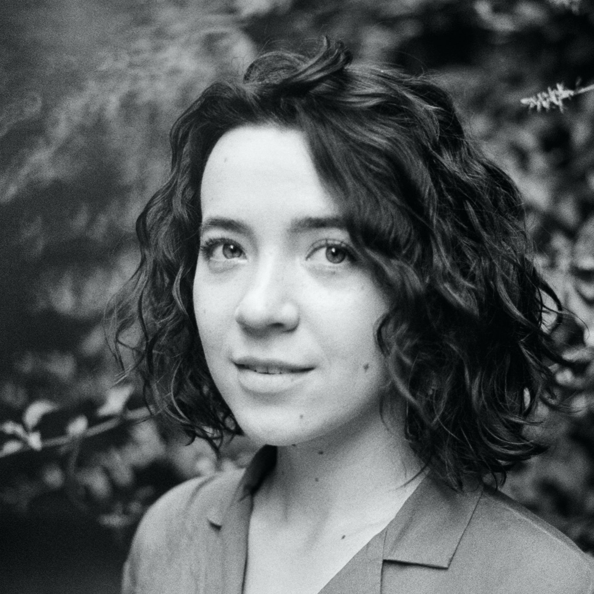

Мурсалимова Ляйсан
Образование:
- май 2021 г. — подготовительные курсы в дизайн-бюро Артёма Горбунова;
- 2014—2017 гг. — Казанский федеральный университет, бакалавриат по специальности «Финансы и кредит».
Опыт работы:
- 2017-2018 гг. — старший экономист в дирекции кредитного анализа в ПАО «Ак Барс Банк» (г. Казань).
Знание языков:
- английский B2;
- японский A2.
Хобби: танцую сальсу New York, увлекаюсь фотографией и люблю культуру Японии.